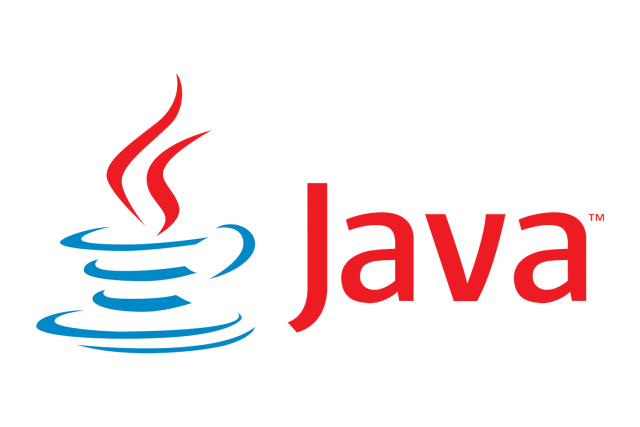

Введение
«Для меня долгое время было загадкой, как что-то очень дорогое и технологичное может быть столь бесполезным.
И вскоре я осознал, что компьютер — это глупая машина, обладающая способностями выполнять невероятно умные вещи, тогда как программисты — это умные люди,
у которых талант делать невероятные глупости. Короче говоря, они нашли друг друга.»
- Билл Брайсон, писатель
Программирование — одна из наиболее востребованных и интересных для изучения областей в сфере информационных технологий.
Каждый день мы сталкиваемся с различными продуктами программирования — от веб-сайтов до компьютерных игр.
Для их создания программисты используют языки программирования. Языки программирования являются инструментами для разработчика – они помогают ему
представить свои идеи в цифровом виде. И чем больше у него этих инструментов и чем лучше он умеет ими пользоваться, тем легче ему это даётся.
Но владеть всеми языками программирования на высоком уровне довольно сложно. И люди, только начинающие осваиваться в этой области,
часто задаются вопросом: «Какой же язык программирования мне выбрать?». Действительно, в настоящее время существует довольно большое количество языков,
использующихся для разработки программ, и не всегда очевидно, какой из них будет наиболее подходящим для выполнения определённой задачи.
Чтобы определиться с выбором, нужно понять, какие вообще есть языки программирования, выявить их преимущества и недостатки, и на основе этой информации создать
советы по выбору языка программирования, чтобы помочь начинающим программистам с этим вопросом.
Терминология
Пожалуй, стоит начать с определения некоторых терминов, которые я буду употреблять далее.
Язык программирования – набор лексических, синтаксических и семантических правил, определяющих внешний вид программы.
То есть, язык программирования – как правила орфографии и пунктуации: он определяет, как пишутся команды, как оформлять их знаками пунктуации
(напр. запятыми, скобками, двоеточиями и др.) и какую функцию выполняет каждая команда.
Языки программирования низкого и высокого уровня – степень, в которой семантика языка учитывает особенности мышления человека,
нежели машины — то есть уровень языка тем «ниже», чем он «ближе к машине», и тем «выше», чем он «ближе к человеку».
Библиотека — это набор готовых программ, объектов и функций для решения типовых задач.
Десктоп – настольный компьютер. Десктопный – предназначенный для настольного компьютера.
Команда – описание операции, которую выполняет компьютер. Обычно у команды существует свой код (условное обозначение), исходные данные и результат.
Компиляция (кода) – перевод программы, написанной на языке программирования высокого уровня,
в эквивалентную программу на низкоуровневом языке, близком машинному (двоичному) коду.
Кроссплатформенность — способность программного обеспечения работать с несколькими аппаратными платформами или операционными системами.
То есть, одно и то же кроссплатформенное приложение может работать на нескольких устройствах.
Отладка – этап разработки компьютерной программы, на котором обнаруживают, локализуют и устраняют ошибки.
Программа – текст (код), написанный на одном из языков программирования, содержащий инструкции (команды) в логической последовательности.
Скрипт – небольшая программа.
Фронтенд (от англ. front-end) — это пользовательский интерфейс на клиентской стороне веб‑сайта или приложения. То есть, это всё, что видит пользователь
когда открывает сайт или приложение, и с чем он взаимодействует: кнопки, баннеры и анимация.
Бэкенд (от англ. back-end) — это внутренние процессы продукта (сайта или приложения).
Бэкенд отвечает за взаимодействие пользователя с внутренними данными, которые потом отображает фронтенд.
Попросту говоря, это то, что скрыто от глаз пользователя и происходит вне его браузера и компьютера.
Фуллстек (от англ. full-stack) – это совмещение фронтенда и бекэнда. То есть, фуллстек-разработка –это создание как серверной части веб-приложения
(бэкенда), так и его интерфейса (фронтенда).
Популярные языки программирования
Для этого списка я выбрал несколько самых известных и широко используемых языков программирования, основываясь на рейтинги популярности и
статьи по этой теме (см. Список используемых источников). Также скажу, что они не идут в каком-либо определенном порядке
(например, от лучшего к худшему).
1) Python

Python является одним из самых востребованных и популярных языков программирования на данный момент.
Его популярность основана на том, что язык имеет очень простой синтаксис, схожий с английским языком,
поэтому начинающим программистам легче дается его изучение.
Также Python считается одним из наиболее универсальных языков программирования.
Он одинаково хорошо справляется с созданием веб-приложений и разработкой продуктов для обучения искусственного интеллекта,
а также отлично подходит для высокотехнологичных мультимедиа продуктов.
Плюсы:
- Повышенная производительность.
- Интуитивно простое чтение и написание.
- Развитая официальная документация и учебные пособия.
- Динамическая типизация — компиляция скриптов происходит непосредственно во время выполнения.
- Наличие большого количества библиотек.
- Интерпретируемый язык выполняет код построчно и сообщает об ошибках последовательно, что упрощает отладку.
- Идеально подходит для создания прототипов и быстрого тестирования идей.
Минусы:
- Низкая скорость. Построчное выполнение кода часто приводит к его медленному выполнению.
- Большая нагрузка на память. Производительность Python требует компромисса — повышенного потребления системных ресурсов.
- Из-за повышенного потребления памяти и низкой скорости, не подходит для разработки мобильных и фронтэнд приложений.
Области применения: веб-разработка, графические интерфейсы, бизнес-приложения, машинное обучение (Machine Learning),
наука о данных (Data science), искусственный интеллект (ИИ), анализ и визуализация данных.
-------------------------------------
2) JavaScript

JavaScript (или JS) неслучайно долгие годы удерживал звание наиболее популярного языка программирования в мире.
Этот высокоуровневый язык разработки стал одной из главных технологий, лежащих в основе работы Всемирной паутины.
Сегодня JS используют в качестве языка программирования более 90% всех веб-сайтов Интернета в связке с HTML
(HyperText Markup Language – язык разметки гипертекста, задаёт структуру страницы) и CSS
(Cascading Style Sheets – каскадные таблицы стилей, используется для задания внешнего вида страницы).
Основная специализация JavaScript — фронтэнд. Этот язык программирования востребован в разработке интерактивных интерфейсных приложений, например, всплывающих окон.
Однако JS универсален и вполне может претендовать на роль языка фуллстек-разработки. Он одинаково эффективен для создания как серверных, так и клиентских скриптов.
JavaScript часто путают с Java, хотя это два совершенно разных языка. JavaScript был создан в 1995 году и первоначально назывался LiveScript.
Однако из-за популярности в то время Java, его рекламировали как «младшего брата» Java, что позже отразилось в его названии.
Преимущества:
- Легкость изучения.
- Высокая скорость. Код может выполняться без компиляции и на стороне загрузки страницы.
- Низкая серверная нагрузка, так как код выполняется в браузере клиента.
- Постоянное обновление.
- Разнообразие вспомогательных инструментов и функций.
- Большое сообщество программистов.
- Сочетаемость с разными языками программирования.
Недостатки:
- В основном используется только для создания веб-страниц.
- В браузерах код может отключаться, потому что язык используется для рекламных окон, в которых могут быть вирусы.
- В разных браузерах выполняется не всегда одинаково, что усложняет написание универсального кода.
Области применения: создание веб-страниц, мобильных приложений (с библиотекой React Native).
-------------------------------------
3) С и С++

Ни одно настоящее сравнение языков программирования не может обойтись без этой пары. C++ — прямой потомок языка C,
который считается настоящим «динозавром» среди языков программирования. C был выпущен в 1972 году и продолжает активно использоваться и сегодня.
Почти все низкоуровневые системы, такие как ОС и файловые системы, написаны на C/C++.
C++ — мощный, высокопроизводительный язык, хотя и низкоуровневый. Изучение такого языка требует больше времени на понимание того,
как работают некоторые его функции. Поэтому у новичка, осваивающего C++, будет меньше времени для изучения основ компьютерного программирования
в целом. Но если начинающий разработчик готов к этому, то данный аспект этого языка вряд ли ему помешает.
Кроме того, есть замечательные ресурсы, с помощью которых можно облегчить свой путь.
Именно поэтому C++ используют многие ресурсоемкие программы. Его изучение будет хорошим выбором для тех разработчиков, кто уже знаком
с программированием и хочет работать над крупными проектами и иметь большой контроль над выполнением программ.
Плюсы:
- Быстрота выполнения написанного кода.
- Хорошая основа для освоения более сложных языков программирования.
- Один из лучших вариантов для создания кроссплатформенных программ.
- Хорошая портативность.
- Разнообразие функций.
- Простота отладки, проверки и обслуживания приложений.
Минусы:
- Сложный синтаксис по сравнению с другими языками (что, впрочем, не мешает ему быть хорошим языком для изучения).
Области применения: настольные приложения и ПО, мобильные приложения, игровые движки и игры, VR, робототехника, веб-приложения.
-------------------------------------
4) C#

C# (C Sharp, «Си-шарп») - язык, первоначально разработанный Microsoft для работы на платформе .NET (читается "дот-нет"), основанный на C и C++.
В отличие от своего ближайшего «родственника» C++, он абстрагирует многие сложные задачи, необходимые для того, чтобы компьютер мог работать с кодом.
C# — основной язык разработки программного обеспечения и программ для платформы Microsoft. Еще одной популярной сферой применения для C# является игровая индустрия.
Например, это рекомендуемый язык для создания приложений на игровом движке Unity.
Согласно открытой статистике, более 30% наиболее популярных мобильных игр были созданы на C#.
Плюсы:
- Полностью интегрирован с библиотеками . NET.
- Идеально подходит для всех типов разработки под Windows.
- Богатый набор библиотечных функций и типов данных.
- Поддерживает безопасность типов.
- Быстрое время компиляции и выполнения.
Минусы:
- Разрешает указатели в «небезопасных» блоках.
- Почти все переменные являются ссылками, а освобождение памяти осуществляется с помощью сборщика мусора.
- Предлагает меньшую гибкость, чем C++.
Области применения: разработка игр (Unity), десктопные приложения (Microsoft, Windows), веб-сервисы и приложения.
-------------------------------------
5) Java

Java — один из самых популярных языков программирования в мире сегодня используется в более чем в 3 млрд. устройств.
Его можно применять для самых разных проектов — от написания кода приложений для смартфонов Android до создания сложных настольных приложений.
Хотя Java основан на C++, он немного проще в изучении и использовании, особенно для начинающих.
Одна из фундаментальных идей разработчиков Java заключалась в том, чтобы создать язык программирования, который позволил бы их коду работать на двух совершенно непохожих
друг на друга устройствах. Это иллюстрирует и лозунг Java: «Write once, run anywhere» (Напиши один раз – запускай где угодно).
Язык Java популярен для разработки на всех платформах, операционных системах и устройствах, но особенно широкое применение находит сегодня в
создании мобильных приложений для Android. Эта универсальность и гибкость делают Java одним из самых востребованных и высокооплачиваемых языков программирования в мире.
Преимущества:
- Возможность использования на любой платформе.
- Мощность и надежность.
- Объектно-ориентированное программирование.
- Разнообразие библиотек с возможностью их редактирования.
- Автовыделение памяти и автосбор мусора.
- Хороший уровень безопасности, так как нет четкого указателя и есть менеджер безопасности.
Недостатки:
- Нет шаблонов, поэтому сложно создавать качественные структуры данных.
- Энергоемкость. Требуется много памяти.
- Медленная работа в отличие от других быстрых языков программирования (например C и C++).
Области применения: мобильная разработка (Android), кроссплатформенное ПО для настольных ПК, разработка игр.
-------------------------------------
6) Swift

Язык программирования с открытым исходным кодом Swift был создан компанией Apple в 2014 году для работы с платформами Apple Cocoa и Cocoa Touch.
С этого времени он заменил Objective-C в качестве основного языка, применяемого Apple для разработки программ под MacOS, iOS (iPhone) и Linux.
Он продолжает развиваться и набирать обороты вместе с растущей популярностью iOS.
Синтаксис Swift похож на английский язык, в этом он напоминает Java и C#. Его отличает хорошо оптимизированный код и очень высокая производительность,
что позволяет ему эффективно масштабироваться. Это обязательный к изучению язык для каждого, кто хочет создавать приложения для App Store, то есть для iOS.
Преимущества:
- Нужно меньше опыта, чем для других языков программирования.
- Сочетается с Objective-C (язык программирования, который ранее использовала компания Apple для создания своих приложений).
- Ускорение создания приложений для устройств экосистемы Apple.
- Высокая производительность.
Недостатки:
- Плохо сочетается с другими инструментами.
- Подходит в основном только для создания приложений для iOS и MacOS.
- Не подходит для работы с ранними версиями iOS.
Области применения: мобильная разработка (iOS), разработка под Linux.
-------------------------------------
7) Kotlin

Российская компания JetBrains представила язык Kotlin в 2016 году как альтернативу Java.
Благодаря официальной поддержке Google он стал одним из основных языков разработки приложений на Android.
При этом он совместим с Java: код обоих языков можно использовать в одном и том же проекте.
Помимо разработки Android, Kotlin используют и в серверных, и в клиентских приложениях. Сообщество Kotlin живое, хоть и немногочисленное.
Язык развивается не очень быстро, несмотря на открытость исходного кода.
Плюсы:
- Надежность — Kotlin прошел длительный период альфа- и бета-тестирования, к тому же имеет официальную поддержку от Google.
- Короткое время разработки – разработчику придется писать меньше кода по сравнению с Java.
- 100% совместимость с Java.
Минусы:
- Относительно нестабильная скорость компиляции.
- В некоторых случаях может быть медленнее, чем Java.
Области применения: разработка программ для Android, веб-программ, создание приложений для серверов и ПК.
Как же выбрать?
Что же, теперь стоит перейти к выбору языка программирования. Для того, чтобы нам его сделать, нужно понять, по каким критериям можно сравнивать языки программирования,
и затем для себя определить, какой же лучше.
Первый критерий – область применения языка программирования. Я свел информацию об этом в таблицу ниже для более удобного рассмотрения, а так же для примера я сделал программы на
каждом упомянутом выше языке программирования. Каждая из них выводит на экран сообщение «Hello World!» («Привет, мир!»).
Обычно это является первой программой, которую пишет программист, поэтому я решил это показать.
| Сфера применения | Какой язык изучать |
| Android-разработка | Kotlin, Java, C++, JavaScript |
| iOS-разработка | Swift, C# |
| Создание веб-сайтов | JavaScript, Python |
| Создание серверов | Python, Java, JavaScript |
| Создание игр | C/C++, C#, JavaScript |
| Искусственный интеллект (ИИ) | Python, Java |
| Создание программ для ПК | C/C++, Java, Python |
| Системное программирование | C/C++ |
Python
print("Hello World")
JavaScript
console.log("Hello World")
// или:
alert("Hello World")
C
#include <stdio.h>
int main() {
printf("Hello World");
return 0;
}
C++
#include <iostream>
int main () {
std::cout << "Hello World";
return 0;
}
C#
using System;
namespace HelloWorld {
class Hello {
static void Main() {
Console.WriteLine("Hello, World");
}
}
}
Java
class HelloWorld {
public static void main(String[] args) {
System.out.println("Hello World");
}
}
Swift
println("Hello World");
Kotlin
fun main(args: Array<String>) {
println("Hello World")
}
Второй критерий – это популярность у разработчиков и пользователей, что гарантирует актуальность выбранного языка программирования, а также наличие сообщества, в котором можно задать вопросы.
Информация об этом есть в рейтингах. (см. Список использованных источников)
Последний критерий – уровень спроса у работодателей. Он дает понимание о конкуренции и количестве вакансий.
Этот критерий постоянно меняется, поэтому я оставил ссылки на некоторые сайты, на которых можно посмотреть данную информацию. (см. Список использованных источников)
Выполнив анализ, можно сказать несколько вещей:
1) Лучшего языка программирования не существует. Каждый из них имеет разную область использования. Конечно, есть языки, которые как мультиинструмент – могут использоваться где угодно, но это не означает, что они будут везде одинаково хороши.
2) Нужно выбирать тот язык, который больше всего подходит под вашу задачу. Но если у вас нет задачи и вы пока не знаете, в какой области вы хотите работать (или вы – новичок и в общем у вас не так много знаний о программировании), выбирайте Python или JavaScript.
С Python легче начать свое приключение в мир программирования, благодаря его высокоуровневости и (как следствие) легкому синтаксису, и поэтому с ним будет легче изучать основы программирования. Также есть много форумов и ресурсов, в которых можно узнать больше или задать вопрос.
JavaScript тоже является довольно простым языком для освоения. Тем более, в Интернете есть учебник по JavaScript (ссылка), в котором все обьясняется, на мой взгляд, легко и доступно для начинающего программиста. Ну и как с Python, есть много форумов и ресурсов, по которым можно обучить себя дальше.
Стоит упомянуть C++ - низкоуровневый язык программирования, из-за чего его изучение будет сложнее, чем у двух языков выше, но в процессе его изучения вы сможете глубже разобраться в том, как работают компьютеры (например, как хранятся различные типы данных, что такое указатели и т.п.).
Также я нашёл сайт-учебник для изучения С++ (ссылка) - с его помощью процесс изучения будет легче.
Ещё несколько советов:
1) Рекомендую создать аккаунт на GitHub. GitHub - это облачная платформа для хостинга IT-проектов и совместной разработки. На GitHub можно посмотреть все проекты разработчика, увидеть, как он думает и пишет, как развивался и рос.
2) Учите английский язык (если вы им не владеете). Да, есть ресурсы на русском языке, позволяющие изучать программирование, но всё же большинство документации и ресурсов написано на английском языке. Его понимание значительно облегчит ваш путь в мир программирования. Тем более, если вы будете владеть английским, вы сможете смотреть больше информации не только про языки программирования, но и про другие интересующие вас темы.
3) Если вы уже немного освоились с выбранным вами языком программирования, можете попробовать проходить испытания – небольшие задачки на проверку ваших умений. Так вы сможете закрепить изученные вами навыки на практике. Ссылки на сайты с ними вы можете найти ниже.
Надеюсь, эти советы помогли вам определиться с выбором!
Заключение
В заключение хотелось бы сказать, что даже если вы выбрали и выучили какой-то язык программирования, это не значит, что дальше некуда развиваться.
Технологии не стоят на месте, и со временем даже тот язык, с которым вы будете работать, через какое-то время устареет и ему придет на смену новый, или он претерпит сильные изменения.
Так что главное для программиста – не знание в совершенстве одного языка по своей специальности, а умение работать с несколькими, а также умение осваивать новые языки программирования.
Развивая себя, человек будет развивать и то, что находится вокруг него.
Ведь не зря старинная русская поговорка гласит: «Век живи, век учись».